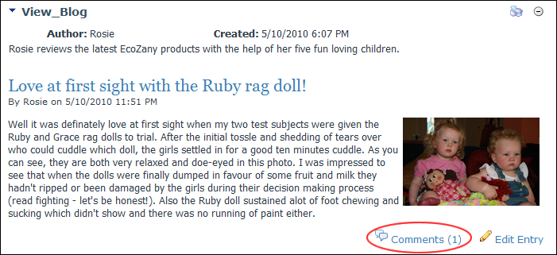
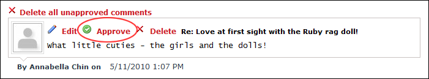

How to approve blog comments on the Blog module. This task can be performed by bloggers on their own blog as well as by the Administrator on all blogs.


Tip: Bloggers can enable a notification email to be sent when comments are posted which helps you know where to locate comments requiring approval. See "Blog Settings (Bloggers)" for details on enabling comments and comment options.